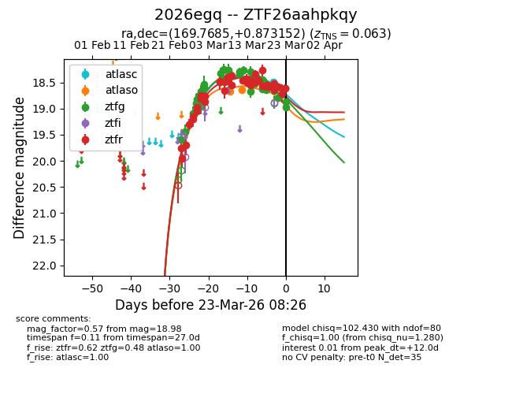
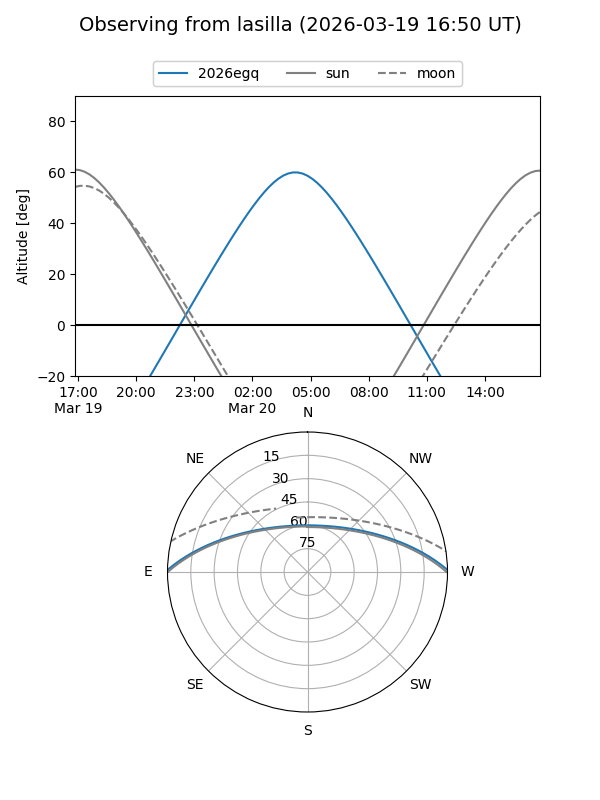
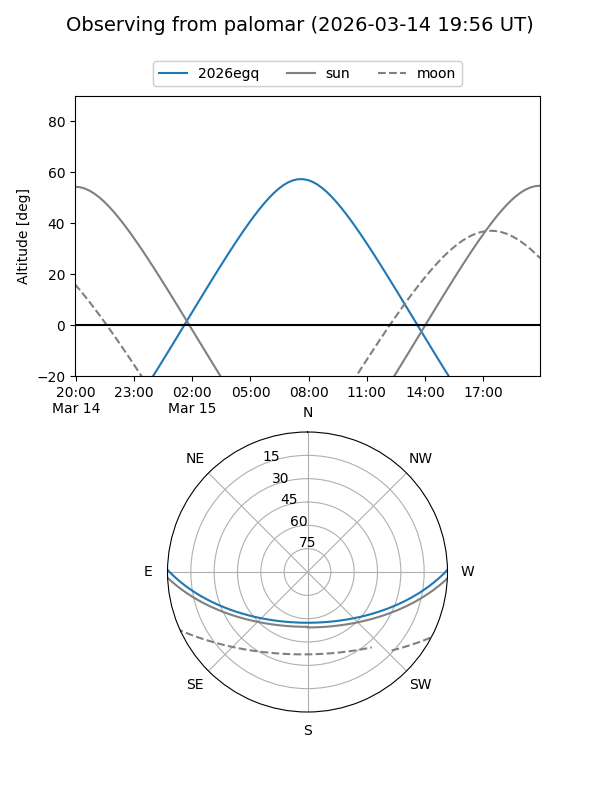
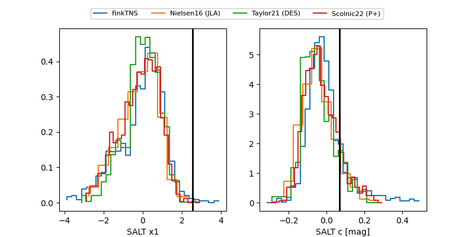

2026egq
Target 2026egq at 2026-03-23 08:28
Aliases and brokers:
FINK: link
Lasair: link
ALeRCE: link
TNS: link
YSE: link
alt names
ZTF26aahpkqy (ztf,fink_ztf)
2026egq (tns,yse)
Coordinates:
equatorial (ra, dec) = 169.7685,+0.87315
equatorial (HMS+DMS) = 11:19:04.44,+00:52:23.35
galactic (l, b) = (258.9151,+55.64315)
Flags:
confirmed ia
Photometry:
last atlasc=18.49, atlaso=18.56, ztfg=18.98, ztfr=18.62
2 atlasc, 3 atlaso, 30 ztfg, 40 ztfr detections
Lightcurve

Visibility


Additional plots
